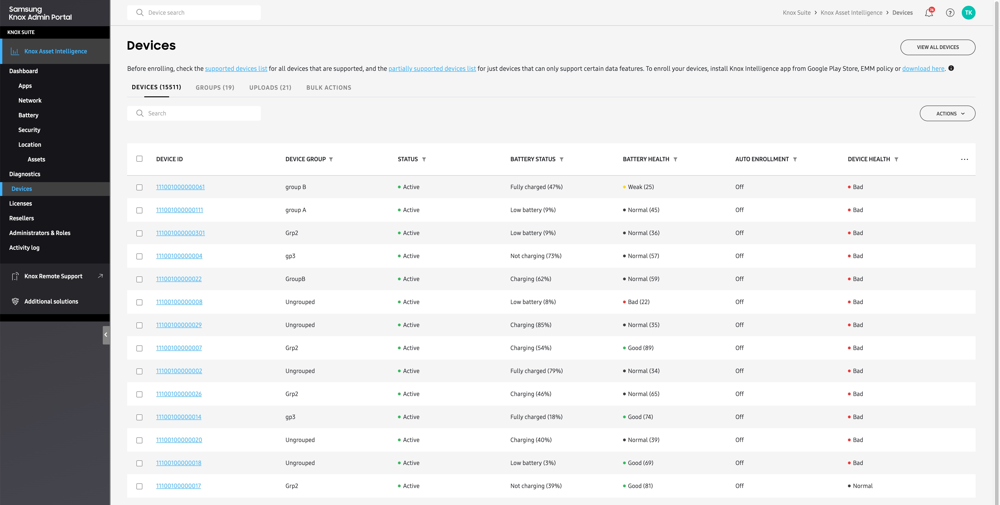
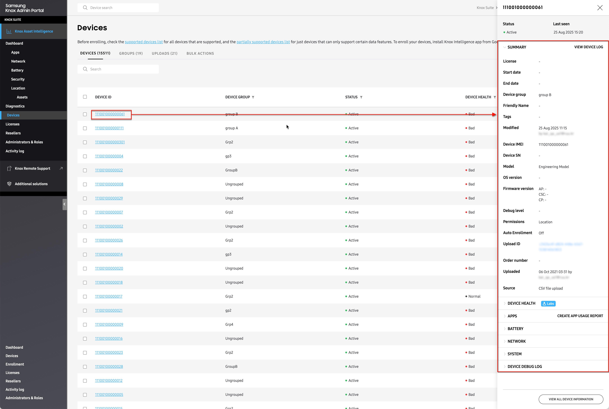
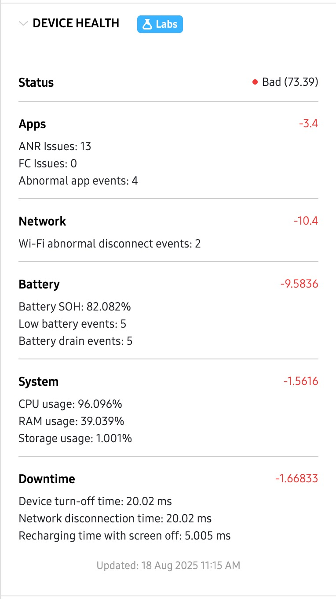
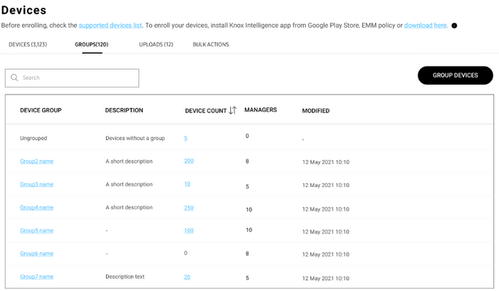
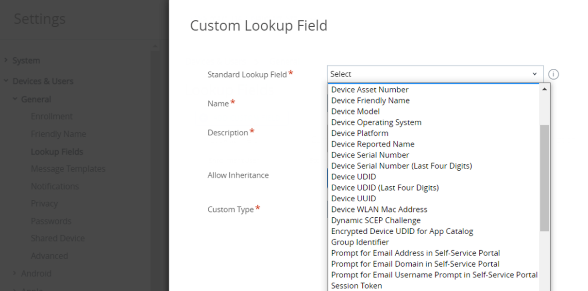
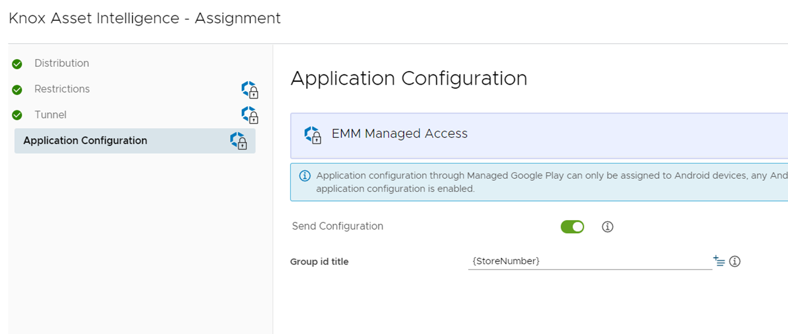
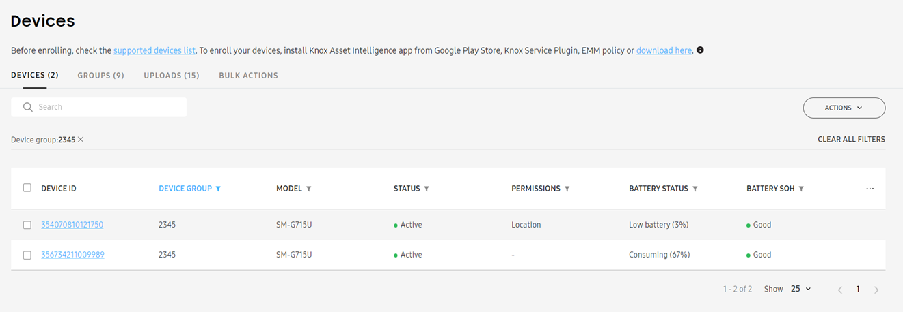
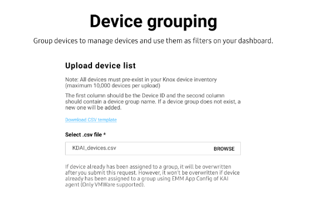

Manage devices
Last updated August 25th, 2025
The Devices page is where you can view information about your enterprise device fleet, create and edit groups, approve device reseller uploads, and perform bulk actions like uploading devices from a CSV file and enabling or disabling auto-enrollment.

Devices tab
When you go to the Devices page, you’ll land on the DEVICES tab by default. This tab provides a table detailing your fleet’s device information like OS version, firmware version, enrollment status, and more.
Customize the device table
You can customize your table by selecting which columns you want to display. To do this, click the table options (…) button, then select your columns and click SAVE CHANGES.
By default, the DEVICE ID column is always selected. You can select up to six additional columns to add to the table.
The following columns are available:
| Column | Description |
|---|---|
| DEVICE ID | The device's unique International Mobile Equipment Identity (IMEI) number. If the device supports two SIMs, only the primary IMEI is shown. This column is always displayed. |
| DEVICE GROUP | The name of the group the device belongs to. Displays Ungrouped if no group configured. |
| MODEL | The device's model number. |
| STATUS | The device's current enrollment status:
|
| PERMISSIONS |
Indicates whether the device has granted location permissions. If location permissions aren't granted, you can send a permission request by clicking ACTIONS > Send permission notification. If your devices are running Android 12 or higher, permissions are granted differently based on your device management mode.
|
| BATTERY STATUS | Indicates the device's current battery charge status. Available values:
|
| BATTERY HEALTH | Provides a summary of your device fleet's overall battery condition and how much of its original charge the battery can hold, as well as the raw battery state of health value (in brackets). Available values:
|
| DEVICE HEALTH | Provides a health score for your device, letting you know if it is operating optimally, or if it requires attention. See Device health for additional information. Available values:
|
Device details panel

Click any DEVICE ID to view additional information about that device in an expanded device details panel. The device details panel provides information broken down into the following sections:
Summary
This section displays device information, including secondary IMEI numbers (for dual-SIM models), unique device tags, license keys, and other helpful information not available in the table customization options.
Available information:
- License: Name of the Knox license used on this device.
- Start date: Your Knox license start date.
- End date: Your Knox license end date.
- Device group: Name of the group this device belongs to.
- Tags: Custom identifier to help you organize and classify your device.
- Modified: Date this device last had a change or update in the system.
- Device IMEI: International Mobile Equipment Identity, a unique 15-digit number assigned to a mobile device, used by network operators to identify and track devices on their network.
- Device SN: Serial Number, a unique identifier used for inventory management, warranty tracking, and device identification.
- Model: Model code of the Knox device.
- OS version: Version of Android currently running on the device.
- Firmware version: Version of the software that controls the hardware components of the device, divided into three different build numbers: AP (Android Processor), CP (Communication Processor), and CSC (Consumer Software Customization)
- Debug level: The level of detail provided by the device when debug logs are requested: HIGH, MID, or LOW.
- Permissions: Whether this device has granted location permissions.
- Auto Enrollment: Whether this device is configured for auto (OOBE) enrollment.
- Upload ID: Unique identifier that indicates who uploaded the device to your account, as well as the upload date.
- Order number: Unique number added by reseller to help them identify the order.
- Uploaded: Date this device was added to your account, along with reseller ID (if uploaded by reseller) or email address (if uploaded by internal admin).
- Source: Method in which this device was uploaded, either Reseller or CSV file upload (if uploaded by an internal admin).
Device Health (Labs)
This section provides a health score to let you know if your device is performing optimally, or if it has issues that require corrective actions. When you expand the DEVICE HEALTH section, you’ll see a Status indicator letting you know if this device’s health is either Good, Normal, or Bad.
- Good: Your device health is 90.00 or higher.
- Normal: Your device health is between 80.00 and 90.00
- Bad: Your device health is lower than 80.00.

Your device health score is calculated by deducting points from a baseline score of 100.00 whenever the device reports an event or issue that impact its performance. The following insights are used to determine the device’s health score:
-
Apps
- ANR issues: The number of times an app becomes unresponsive to user input or takes too long to execute a task.
- FC issues: (Also known as a crash) The number of times an app encounters an unhandled exception or error that causes it to terminate unexpectedly, often displaying an error message to the user.
- Abnormal app events: The number of times an app reports unexpected or irregular behavior that deviates from its intended functionality.
-
Network
- Wi-Fi abnormal disconnect events: The number of times the device experiences an unexpected or irregular disconnection from a Wi-Fi network without a clear or valid reason.
-
Battery
- Battery SOH: An indicator of the battery’s ability to maintain its original charge capacity.
- Low battery events: The number of times the device battery level dropped below the allowable threshold set in Dashboard settings.
- Battery drain events: The number of times the device’s battery consumes an excessive percentage of its total capacity within an hour. The allowable drain percentage threshold is defined in Dashboard settings.
-
System
- CPU usage: The indicator of how much processing power the device uses to run applications or perform tasks.
- RAM usage: The indicator of how much of the device’s available memory is in use when running applications or performing tasks.
- Storage usage: The indicator of how much of its original storage space is currently consumed by the device.
-
Downtime
- Device turn-off time: The amount of time it takes for an Android device to completely power down after the user initiates the shutdown process.
- Network disconnection time: The amount of time it takes for an Android device to lose its network connection after the user initiates the disconnection process or when the network becomes unavailable.
- Recharging time with screen off: The amount of time it takes for an Android device to fully recharge its battery when the screen is turned off.
Apps
This section provides usage information for all apps, based on the previous day’s (yesterday’s) data. From this section, you can click CREATE APP USAGE REPORT to build a custom report that helps you analyze specific app issues related to that device.
The following information is displayed:
- APP: The name of the app that reported usage.
- RUNNING TIME: The sum of an app’s foreground and background run time.
- BATTERY USAGE: The total battery consumption based on the total run time.
Battery
This section provides a summary of the device’s current battery health and condition. The following information is available:
- Battery health: Indicator of the device’s overall battery condition and how much of its original charge the battery can hold. Available statuses: Good, Normal, Weak, Bad. See Battery health to learn more.
- Battery level (%): Device’s current battery charge level.
- Battery status: Device’s current battery charging status, either Charging, Consuming, Fully charged, or Low battery. See Battery status to learn more.
- Battery remaining time: Estimated time remaining before battery completely drains.
- Estimated full capacity: Amount of charge (in mAh) the current battery can hold when fully charge.
- Design capacity: Amount of charge (in mAh) the battery was originally designed to hold when fully charged.
- Avg. daily battery consumption: Average amount of battery (%) that gets consumed each day.
Network
This section displays Wi-Fi consumption data related to your device. Information displayed is based on the last time the device connected to a Wi-Fi connection. The following information is available:
- Network name (SSID): Service Set Identifier, the unique name assigned to the network.
- AP Vendor: Name of the Wi-Fi access point manufacturer.
- AP BSSID: Access Point Basic Service Set Identifier, the unique MAC (Media Access Control) address that identifies the access point.
- Wi-Fi strength (RSSI): Received Signal Strength Indicator, the measure of the Wi-Fi signal’s power level typically ranging from -30 dBm (very strong signal) to -90 dBm (very weak signal).
- Bands: Frequency range used by the Wi-Fi network to transmit data.
- Linkspeed: Maximum data transfer speed between the AP and the client (this device), measured in megabits per second (Mbps).
- Last connected time: Date and time the device last connected to a Wi-Fi network.
- Wi-Fi calling: Indicator of whether the device is configured for Wi-Fi calling, or if Wi-Fi calling is unsupported by the device.
System
This section displays information related to your device’s device storage.
- Device storage: Status of your device’s storage usage, along with the total storage consumption value.
- Normal indicates the device is using less than 90% used of its total storage.
- Bad indicates the device is using more than 90%.
Device Debug Log
This section provides information about the last debug log request made to the device:
- Status: Status of the most recent debug log request, either sent to the device (from console), or initiated by the device user (through a self-upload).
- Updated: Date and time the last debug log request was made.
To help troubleshoot issues with a specific device, you can also click VIEW DEVICE LOG in the top-right corner of the panel to view a history of the device’s activity. From the Device log page, you can click DOWNLOAD LIST to obtain the entire log as a CSV file for further analysis.
Device actions
You can perform device-specific actions like sending Diagnostic device logs requests, sending Device snapshots requests, unenrolling and deleting devices, and more.
To perform an action, select one or more devices, then click ACTIONS and select the type of action you want to perform.
Some actions can be performed without selecting a device.
Available actions:
- Upload device(s): Open the BULK ACTIONS > Upload devices page. Device selection not required.
- Group devices: Opens the BULK ACTIONS > Device Grouping page. Device selection not required.
- Manage device tags: Add custom identifier to help you organize and classify your device. Each device can only have one tag at a time.
- Enable auto enrollment: Configure the device to allow OOBE auto enrollment. See Enroll devices to learn more.
- Disable auto enrollment: Disable OOBE auto enrollment. See Enroll devices to learn more.
- Unenroll device(s): Stop data collection for the device and frees up a license seat. The agent remains installed on the device. Users can re-enroll by launching the agent once again
- Delete device(s): Remove the device from your account.
- Download devices as CSV: Download a CSV file listing every device in your account. Device selection not required.
- View device log: View a complete history of every debug log or snapshot request sent to the device.
- View deletion log: View a complete history of every device that was deleted from your account. Device selection not required.
- Send permissions notification: Send a request to the user to grant location permissions on their device.
- Request diagnostic device log: Send a diagnostic log request to the device. See Request diagnostic logs to learn more.
- Request device snapshot: Send a snapshot request to the device. See Request a snapshot to learn more.
- Schedule device snapshot: Schedule a snapshot request, based on specific criteria. See Request a snapshot to learn more.
Uploads tab
The Uploads tab shows any Samsung devices you’ve purchased from a reseller, after the reseller uploads them to your console. On this tab, you can approve the uploads and add the devices to your device list. Ensure you’ve registered your reseller in the Knox Asset Intelligence console beforehand.
Bulk upload or delete devices
If your devices were not purchased from a reseller, you can use a CSV file to manually upload or delete devices from Knox Asset Intelligence. To do so:
- In the navigation pane, click Devices.
- In Devices screen, click the BULK ACTIONS tab.
- Click UPLOAD DEVICES or DELETE DEVICES to take either action. You can also find CSV instructions underneath the bulk action options.
- In the BULK ACTIONS, select UPLOAD DEVICES or DELETE DEVICES depending on whether you chose to upload or delete devices.
- In the dialog that’s shown, download the CSV template. In the template, enter one device IMEI per line (up to a maximum of 10 000 devices), then save your file.
- Go back to the dialog in the Knox Asset Intelligence console. Under Select .csv file*, click BROWSE to locate your CSV file in the file explorer.
- After selecting your file, click SUBMIT.
In the top-right corner, a notification confirms that your devices were uploaded or deleted successfully.
Groups
Knox Asset Intelligence offers a GROUPS tab where you can view and manage your device group information.

The GROUPS list displays the following info:
| Field | Description |
|---|---|
| DEVICE GROUP | The name of the device group. Click a group name to open a sliding panel with fields to edit the group description and the list of managers. |
| DESCRIPTION | A short phrase describing the group. For long descriptions, hover over the truncated description to see the full text. |
| DEVICE COUNT | The number of devices in the group. Click a number to go to a filtered list of devices belonging to that group. |
| MANAGERS | The number of managers assigned to the group, who are admins with permission to manage groups. Managers can receive alert emails when Wi-Fi or app stability events exceed the thresholds set for the device group. |
| MODIFIED | The date and time the group was last edited. |
There are two ways to upload device group information to Knox Asset Intelligence:
- Using existing group IDs from an EMM
- Through a CSV upload
If you use both methods to upload device group information, the EMM group information supersedes the CSV upload.
Using existing group IDs from an EMM
For organizations using Workspace ONE UEM
If you modify or delete a group in your EMM after uploading a CSV file, your Knox Asset Intelligence group data may be affected.
Knox Asset Intelligence supports dynamically-generated group IDs, also referred to as lookup fields, that simplify the group syncing experience between Knox Asset Intelligence and Omnissa Workspace ONE UEM. Workspace ONE UEM provides lookup values that can be used instead of static group ID values, which represent an element of the device or user that you might not normally have access to.

For example, you might want to group several Galaxy XCover Pro devices together in Knox Asset Intelligence. Instead of creating a dedicated group in Workspace ONE UEM, you can select device model as a lookup field to find all XCover Pro devices in your fleet, which then auto-syncs to Knox Asset Intelligence as a device group.
Refer to Omnissa Workspace ONE documentation for a full list of supported lookup values.
You can also create Custom Lookup Fields using regular expressions, which let you assign friendly names to your lookup fields. Learn more in the Omnissa Workspace ONE documentation.
On the Workspace ONE UEM console, once you define a standard or custom lookup field for group IDs, enter it in the Application Configuration menu for the Knox Asset Intelligence agent. Doing so sets the lookup field as a dynamically-generated group ID for each device. Note that the application configuration is pushed through Managed Google Play.

Once the application configuration is pushed to the enrolled devices, the Knox Asset Intelligence agent receives the group ID through Workspace ONE Intelligent Hub and automatically assigns the device to the designated group. You can then see the device group and assignment on the Knox Asset Intelligence console.

For organizations using other EMMs
In other EMMs that don’t support lookup fields, you can manually enter group IDs in the application configuration section.
Through a CSV upload
If your devices aren’t grouped through an EMM or you prefer to manually define your device groups, you can upload a CSV file containing device IDs and group names to the Knox Asset Intelligence console.
To group devices:
- In the left sidebar of your Knox Asset Intelligence console, click Devices.
- On the Devices screen, select the GROUPS tab.
- To the right of the search bar, click GROUP DEVICES.
- On the Device grouping screen, download the CSV template. Enter a device IMEI and a venue name per line in the template (up to a maximum of 10,000 devices), then save your file.
- Under Select .csv file*, click BROWSE to locate your CSV file in the file explorer.

- After selecting your file, click SUBMIT.
If one or more of your devices can’t be enrolled, a notification is shown in the top-right corner with a download link to a CSV file containing error details.
On this page
Is this page helpful?